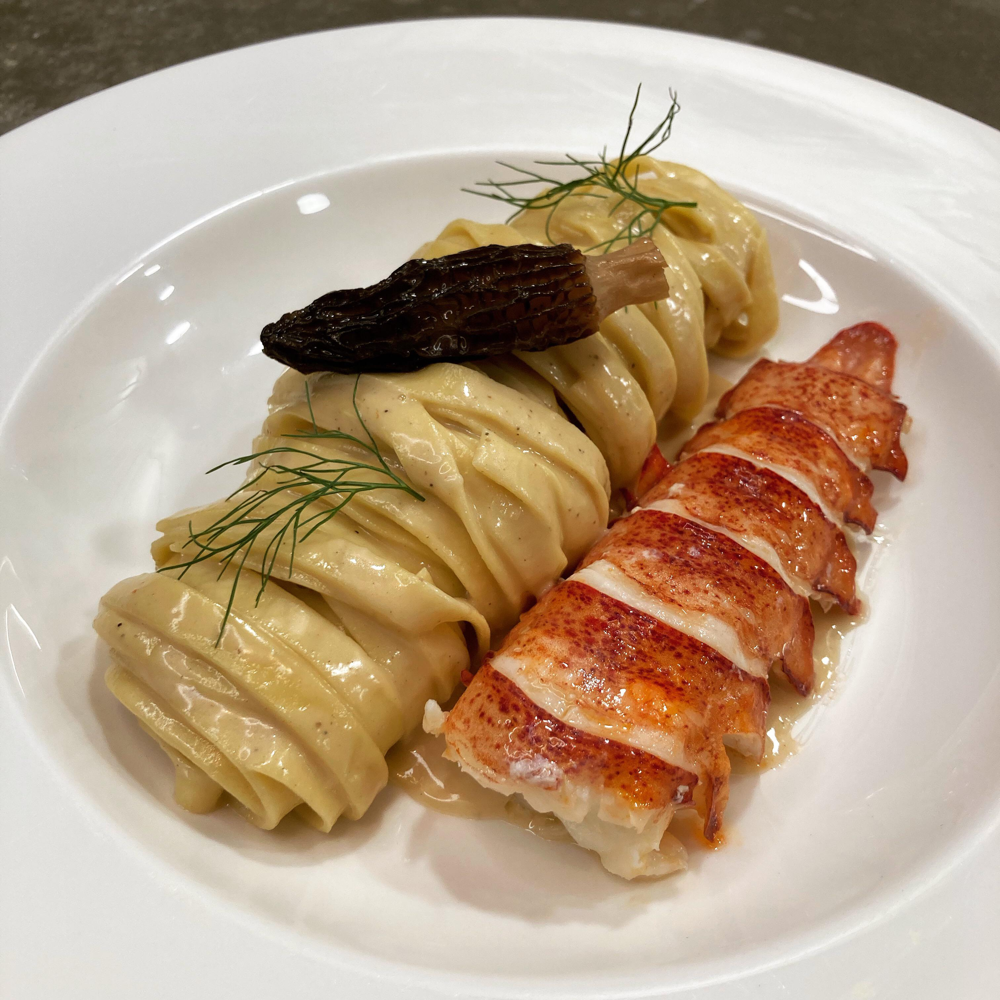
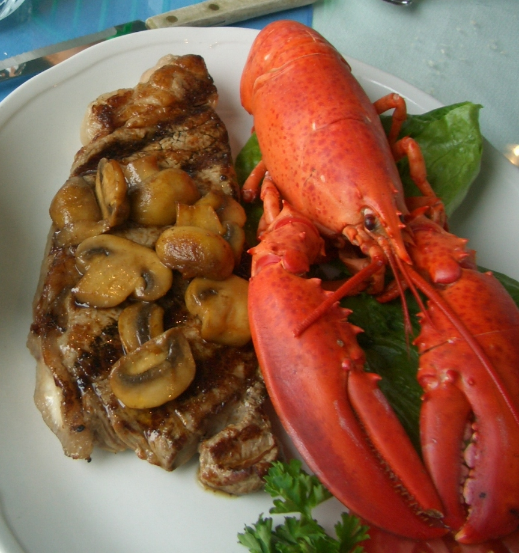
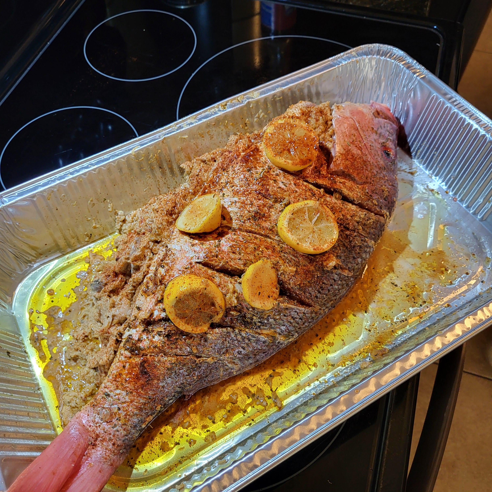

There is a variety of resturants and local attractions on the main island of Taniti. The island has a rich history before becoming part of overseas French Republic Colonies. The Polynesians represent around 70% of the island population. The island has world recognized dance culture, known as the ōtea. It is often confused with Hawai'ian Hula, but the Polynesian variety is usually more uptempo. Below are a few examples of resturants and local attractions available.
There also are a few interesting museums to visit for those interested in the history or natural beauty of the island. The Le Musée de Taniti Et des îles Taniti, discusses the history of French Polynesia, and the impact it had on the local island culture. The Fare Natura ecomuseum on the Moorea island goes into detail regarding local flora and fauna. There are also a few famous authors, and artists that fell in love with the region, a few of whom are buried at the island that also have museums on the surrounding islands.
an example of some of the food available on the island:



The Lobster and pasta photo taken by awcadwel on reddit, the surf and turf photo taken by Chensiyuan available on wikipedia, the roasted fish photo taken by Straight_Spring9815